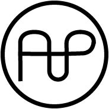

Kaktus mønster
Om mig
Portfolio

Dette mønster er produceret i illustrator. Først er det blevet tegnet på et stykke papir og derefter scannet ind med Adobe Capture og herefter vektoriseret. Efterfølgende er mønsteret blevet behandlet i illustrator.